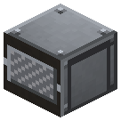
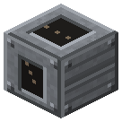
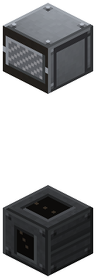
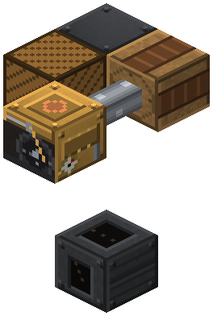
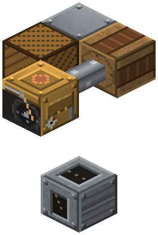

Skip Hoist Winch
Era 2Steam and mechanics

idle

running
Over the shaft, driven by a pulley. Hoist: 256 per trip from the bin into chests nearby. Sneak + empty hand - hoist/lower mode.
Parameters
| Era | 2 — Steam and mechanics |
|---|---|
| Multiblock | no |
| Drive | shaft 4 hp |
| What it does | hoisting from the shaft |
| Input energy | shaft 4 |
| Made of | steel gears and plates, IC2 iron shaft, iron plates, steel rope |
Numbers
| skip winch | 4 hp |
|---|
Fed by
- shaft ← Steam Engine, High-Pressure Steam Engine (transmission)
Feeds
- no Zavod machine uses its product
Assembly
Shift + empty hand — hoist / lower.

The loader at the bottom of the shaft. Takes anything: hoppers, excavator hatches, by hand.

The winch strictly above the loader. Between them — an empty shaft (air, water, ladders).

A chest next to the winch (side or top) gets the haul; drive — a pulley beside it and a shaft.

assembled
running
chest or any inventory (not ours)
Faded blocks were placed in earlier steps.